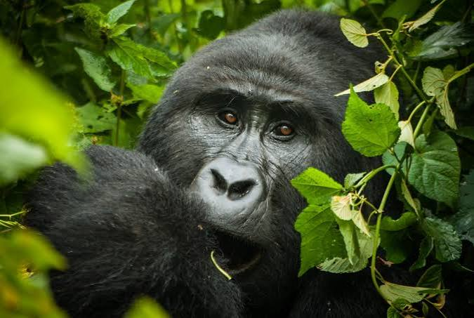
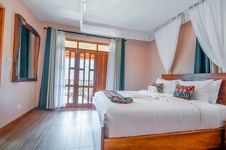

Why Uganda is called the Pearl of Africa

Mountain Gorilla TrekkingUNESCO World Heritage site experience. Trek through Bwindi Impenetrable Forest to meet endangered mountain gorillas in their natural habitat.
Updated todayBwindi Lodges

Gorilla Leisure Lodge